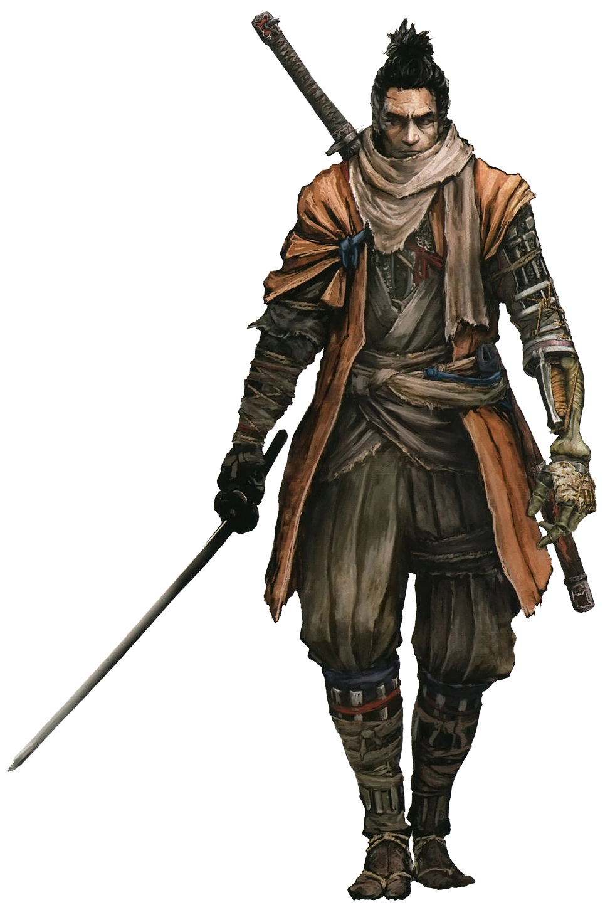
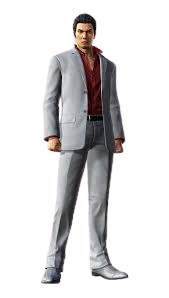

Você joga como Sekiro, um guerreiro shinobi conhecido como "Lobo". Ele tem a missão de resgatar seu jovem mestre, Kuro, herdeiro de um poder misterioso conhecido como "Sangue do Dragão", que pode conceder imortalidade. Ao longo de sua jornada ele perde seu braço em uma luta e é resgatado por um antigo shinobi que o entrega uma protese shinobi que auxilia Lobo em sua jornada, após a perda de seu braço ele recebe o nome de "Sekiro" ou em japonês "O lobo de um braço só".

Sekiro: Shadows Die Twice é um videogame de ação e aventura desenvolvido pela FromSoftware (a mesma empresa responsável por jogos como Dark Souls e Bloodborne) e publicado pela Activision. Ele foi lançado em março de 2019 para PlayStation 4, Xbox One e PC, e mais tarde para outras plataformas.
O jogo se passa no final dos anos 1500, durante o período Sengoku do Japão — uma era marcada por conflitos constantes e guerras civis. Mas embora tenha inspiração histórica, Sekiro mistura elementos de fantasia e mitologia japonesa, com monstros sobrenaturais, guerreiros lendários e poderes místicos.
Sekiro se diferencia bastante dos outros jogos da FromSoftware:
Sistema de combate baseado em postura e precisão: Em vez de simplesmente esgotar a vida do inimigo, o jogo foca em quebrar sua postura com ataques e contra-ataques precisos.
Exploração vertical: Sekiro usa uma prótese de braço com um gancho, que permite alcançar telhados e áreas elevadas, o que não era comum em outros jogos da From.
Morte e ressurreição: Um dos elementos centrais do jogo é a possibilidade de "morrer duas vezes". Após morrer, o jogador pode se reerguer uma vez no mesmo local, pegando os inimigos de surpresa.
Sekiro ficou famoso por sua alta dificuldade. Ao contrário de Dark Souls, não é possível criar builds com diferentes classes ou armas — todos jogam com o mesmo personagem, o que exige habilidade pura para avançar no jogo. Muitos consideram Sekiro um dos jogos mais difíceis já feitos, mas também um dos mais gratificantes.